Pizza pays the bills,
cycling is life.
A 16-bit pizza-delivery racing game you ride on your real bike. Pedal your smart trainer through a little 90s mountain town, beat rival couriers to the orders, and race up Mt. Crankmore when the shift is over.
Free. Works with just a keyboard, too. All releases
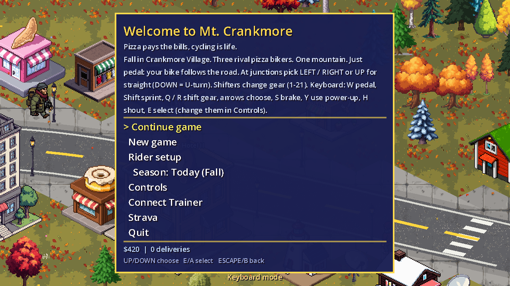
Your watts move your rider. Hills in the game make the trainer push back, and every pizza you deliver is a real effort.
Any FTMS trainer over Bluetooth, and Wahoo KICKRs over Wi-Fi with Direct Connect. The game sets the resistance for every climb and descent.
No smart trainer? A Bluetooth power meter on pedals, cranks or a spider works too.
Steer at junctions, shift through 21 virtual gears and fire power-ups without letting go of the bars.
Every session is logged and posts to Strava as a Virtual Ride, with power, cadence, distance, climbing and your pizza count.
Tell the game your FTP (the power you can hold for about an hour) and your weight, once, in Rider setup. Then pick a difficulty for how you feel today: it sets how hard the other riders go, as a share of what you can do. Fresh legs? Turn it up. Tired, or just spinning? Turn it down. Every rival, race and challenge in town follows it, so a race is a race whatever your FTP.
Want the details? The difficulty guide has the formulas and what it takes to win each race.
Day turns to night, the seasons change and there's always something going on: parades, fireworks, runaway dogs and robberies to break up.
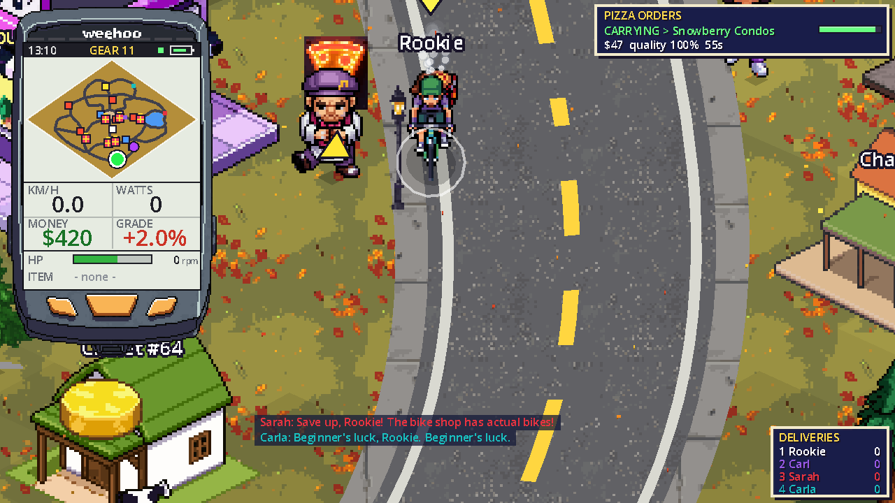
Grab an order from a glowing pizza window and get it there before it goes cold. The other couriers want it too.
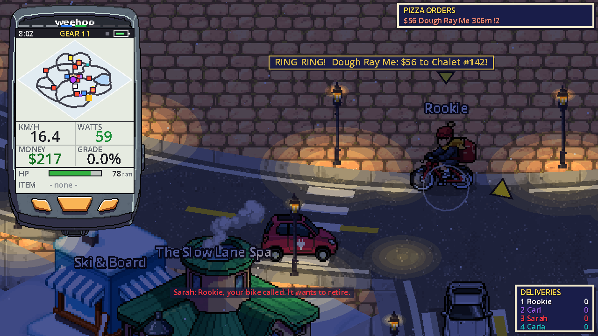
An hour-long day, street lamps at dusk, rain from spring to fall and snow all winter.
While you deliver, the town throws in efforts that pay. Each one asks for a share of your FTP, so it's a real interval whatever your level. A few of them:
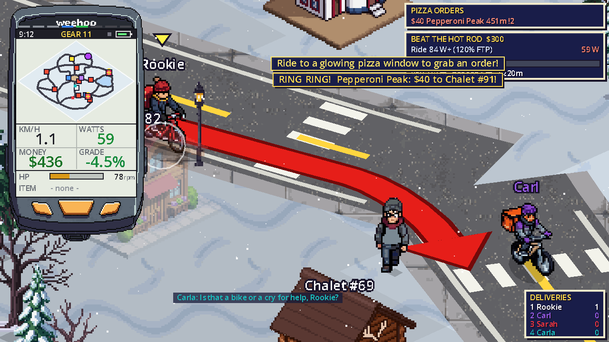
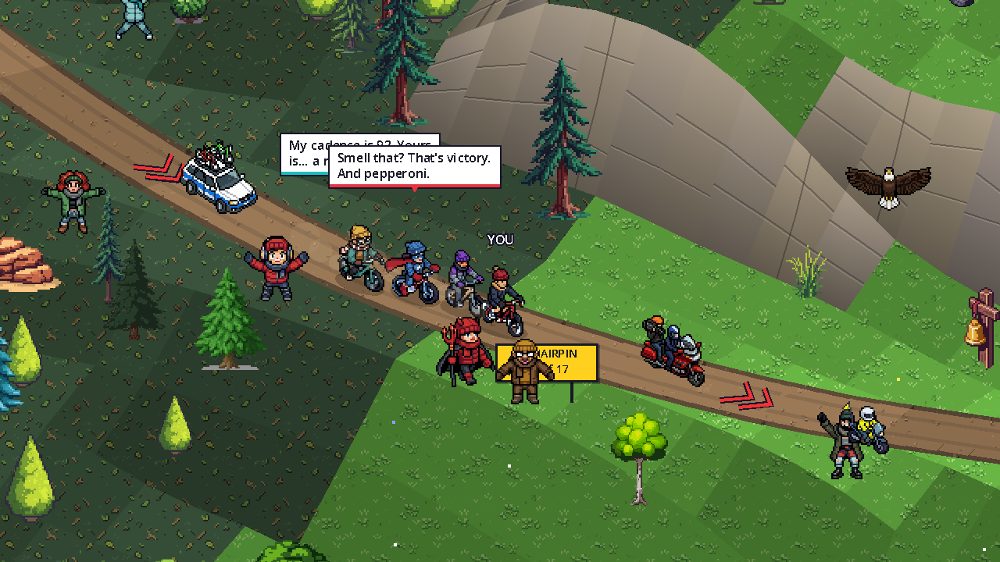
Rivals draft each other, take turns on the front and attack in the last two kilometres. They ride at a share of your power, so a race is a race whatever your FTP.
Five courses, from a meadow loop to the summit: see them all.
You start on whatever was behind the dumpster. Deliver pizza, win races and save up at Spokes & Stuff. A bike changes how fast your watts take you: lighter climbs better, more aero flies on the flat, and some love gravel more than others. Crash too often and its HP runs out. Every rival rides the same middle-of-the-road Club Racer, so a better bike makes you faster and nobody else.
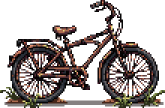
Your first bike
Found behind a dumpster. Squeaks in three keys.
11.8 kg60 HP
Free, and the mechanic fixes it for nothing
Can't be destroyed: you just tape it back together
The heaviest, slowest and wobbliest bike in town
Thunder Thighs McGee won't race you on it
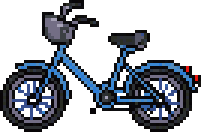
$250
Comes with a bell and a mysterious stain.
9.7 kg85 HP
Cheap, and a big step up from the trash bike
Still heavy, upright and draggy: not much of a racer
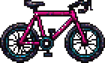
$2,000
Completely impractical, but utterly awesome.
7.5 kg95 HP
Light and quick on the flat
Made for the Velodoughm and the Crusty Crit
One gear and no brakes: a grind up the mountain
The worst bike on gravel
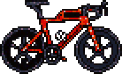
$2,600
Light as a thin crust. Costs like a stuffed one.
7.2 kg130 HP
Light, slippery and sharp in the corners
Quick round town and in the Crusty Crit
Only so-so on gravel
The Golden Pepperoni Pro beats it everywhere
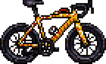
$7,500
Legendary. Smells faintly of mozzarella.
6.6 kg150 HP
The fastest bike you can buy, and the toughest
Great on every course
Pricey
The Gravel Grinder is still better in the dirt
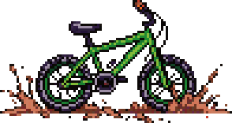
$8,000
Eats curbs for breakfast.
8.3 kg110 HP
The best bike on gravel by far
Built for the Mt. Crankmore races
The most expensive bike in the shop
On tarmac, only as quick as the rivals' bikes
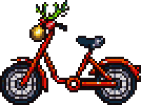
A gift from Santa
A present from Santa: bells on the bars, antlers on the stem. Jingles over every bump.
11.1 kg70 HP
Free, festive, and it jingles
Sturdier than the trash bike
Nearly as heavy and slow as the trash bike
Only turns up on a winter night
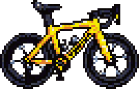
Beat Maillot Max
Maillot Max's own yellow race bike, handed over after you beat him. Signed on the top tube.
6.5 kg160 HP
The lightest, most aero and toughest bike in the game
There's only one: you have to beat Maillot Max to get it
Eight couriers want your orders and your podium. Pick how many ride with you (one to eight) in Rider setup. They all trash-talk, steal orders, throw power-ups and race at a share of your power, but each has a style: some attack again and again, some sit in and wait.
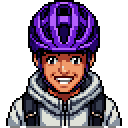
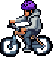
Conspiracy theorist. Every pothole is a cover-up and the Mothman is real, and it delivers faster than you. Picks the moment to go in a race.
Mothman delivers faster than you. Just saying.
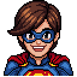
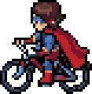
A self-made superhero in a cape that's "scientifically" worth 12%. With a city to save and pizzas to deliver, Sarah attacks to do both.
Have no fear, Super Sarah is here!
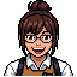
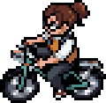
The numbers nerd. Carla knows the cadence (92), yours (a rumour) and your odds (a rounding error). Rides steady and rarely attacks.
Statistically, you're losing.
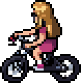
The show-off. Every ride is a highlight reel and every straight is a chance for a wheelie. Attacks more than anyone.
Watch this wheelie! ...Did you watch? Rewind!
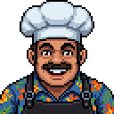
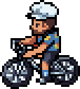
The old-timer who delivered uphill both ways and still doesn't trust derailleurs. The strongest engine in town: a diesel who wears you down rather than attacks.
Back in my day we delivered uphill both ways.
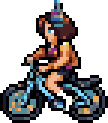
Sweet as can be, and every word is a dig. Bless your little pedals. An all-rounder who makes a move when you least expect it.
Aw, sweetie, bless your little pedals.
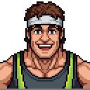
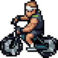
Dude. Chill. Tony is just vibing and thinking about his nap. The most laid-back rider in town, and he almost never attacks.
Is it already over? I was vibing.
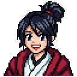
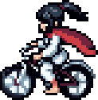
Black belt, in pedalling too. Focused, strong and quick to strike: when Kim goes, you hear the Hi-YAH on the way past.
Hi-YAH! That was me passing you.
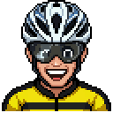
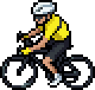
Three-time winner of the Tour de Crankmore, and he'll tell you about it. About once an hour of riding he's announced as visiting town: get to Race HQ within five minutes and you can take him on in a mountain race, with all the rivals too. He rides 10% harder than the strongest of them and attacks often.
Finish ahead of him for a $500 bonus, and he hands over his own bike.
Is that a pizza bike? Adorable.
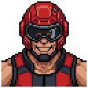
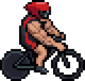
The sprinter who owns the Velodoughm. His quads have their own postcode. One flying lap, just you and him: he puts out 150% of your FTP, so it's a flat-out effort to beat him, and the better your bike the less it takes. He won't even line up against the Rusty Trash Bike.
These quads have their own postcode.
Three races start from Mt. Crankmore Race HQ in town and head out into the valley and up the mountain. The Crusty Crit and the Velodoughm have their own buildings on the edges of town. Payouts on the bunch races: the winner takes the prize, 2nd half of it, 3rd 30% and 4th 15%.
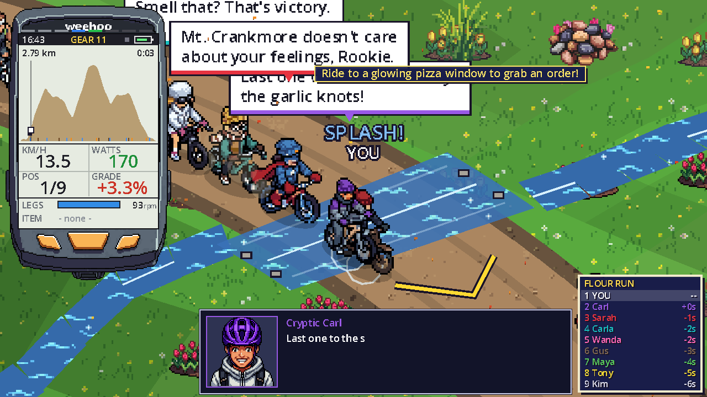
The gentle one. A loop through the flower meadows at the foot of Mt. Crankmore, with easy climbs, short dips and flat stretches, finishing back where you started. Good for a first race, or a recovery day.
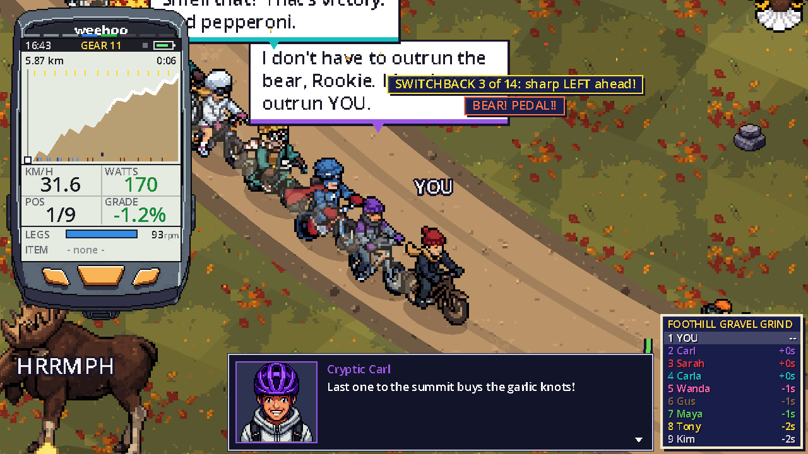
Six kilometres of rolling gravel switchbacks up the lower slopes. Lots of short ups and downs, so it pays to stay in the draft and pick your moment.
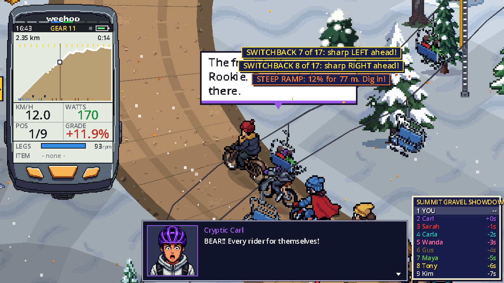
Straight up Mt. Crankmore. Hairpin after hairpin stacked up the face like the Alpe d'Huez, with ramps up to 12% and short plunges in between, all the way to the snow at the top. Legends are made here. So are blisters.
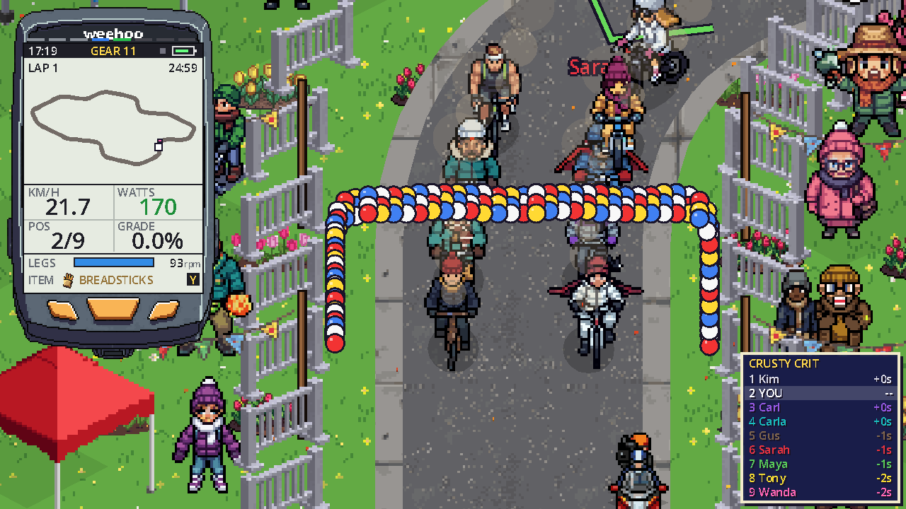
A flat criterium round the park on the west edge of town, with half the village lining the barriers. Race as many laps as you can in 25 minutes, then everyone gets two more. All eight rivals sign on, so it's a big bunch, fast corners and a sprint under the balloon arch.
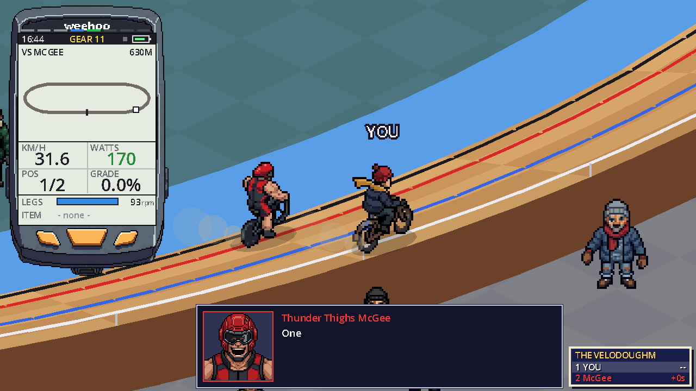
An indoor wooden track on the east edge of town, banked steep in the turns round two basketball courts. One flying lap against Thunder Thighs McGee. No drafting and no power-ups: just legs. Track tyres on smooth boards roll almost for free, whatever you ride.
Every ride counts. The game logs your session from the moment you hit New game or Continue until you quit to the title, and shows you exactly what you rode.
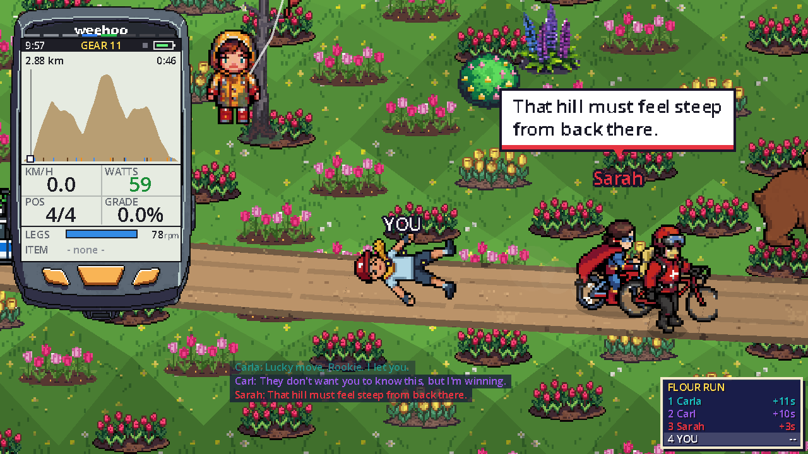
A little bike computer rides in the corner of the screen the whole time, like the one on your bars.
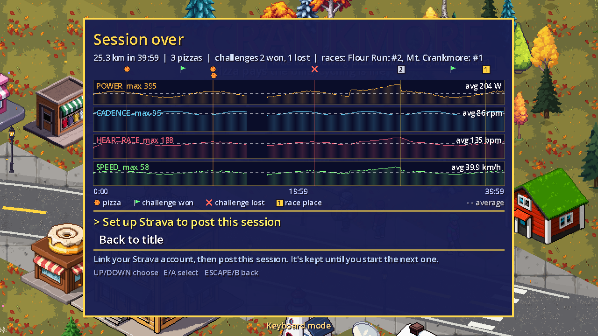
Quit to the title and you get the whole session on one screen.
Link your account once and post the session from the same screen.
Heart rate, coming next, comes from a Bluetooth strap, or ANT+ through a Wahoo trainer. The pause menu keeps your all-time totals: money, deliveries and races won.
Already being tested for the next update:
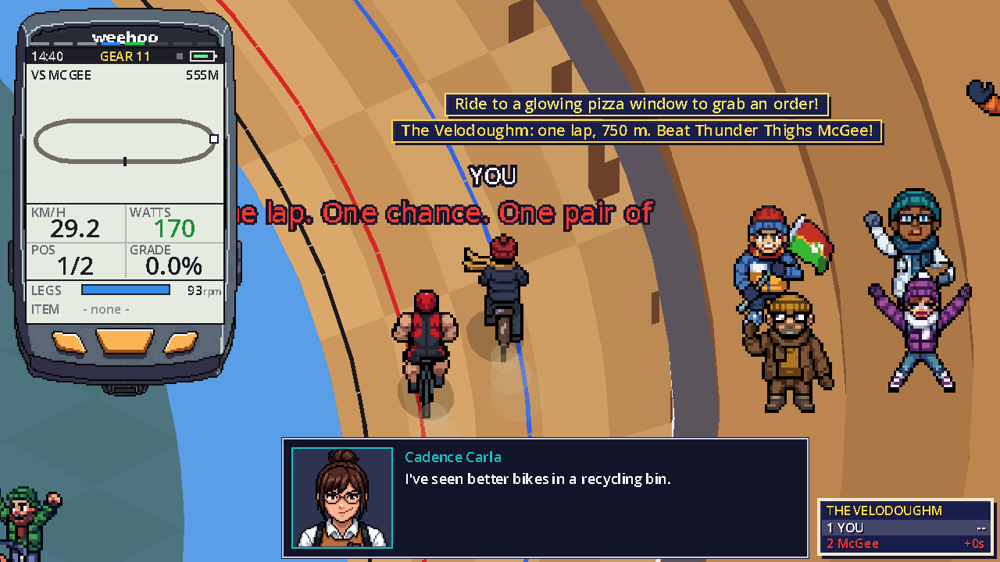
Download the build for your computer and you're riding in a minute.
Windows: unzip and run MtCrankmore.exe. Linux: extract and run the binary. macOS: see the next step.
Right-click the app and choose Open. If macOS says it's damaged, run xattr -cr "Mt. Crankmore.app" once.
Choose Connect Trainer on the title screen. Installing the Bluetooth helper the first time needs Python 3 and an internet connection.